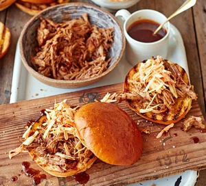

BBQ Pulled Pork
Link back home

Ingredients for the Pork
- 1kg Pork Shoulder
- 3 tbsp. brown sugar
- ½ tbsp. salt
- 1 tbsp. smoked paprika
- 1 tsp. garlic powder
- 1 tsp. onion powder
- 1 tsp. ground cumin
- Freshly ground black pepper
- 2 tbsp. vegetable oil
- 350 ml lager
Ingredients for the Sauce & Sandwiches
- 350 g ketchup
- 150ml Apple Cider vinegar
- 150g Dijon mustard
- 50 g brown sugar
- 2 tbsp. Worcestershire sauce
- Buns, for serving
Steps
- In a small bowl, combine brown sugar, salt, paprika, garlic powder, onion powder, and cumin, then season with black pepper. Trim excess fat from pork, cut into large pieces and cover with spice mix, leave for a few hours or overnight.
- Preheat the oven to 150°C. Sear pork on all sides in batches and put in a baking tray. Pour beer around pork and cover with foil. Transfer to the oven and cook until pork is beginning to turn tender, about 2½ to 3 hours. Remove the foil and cook until pork is very tender and pulls apart easily with a fork.
- Remove pork from the oven and let rest and make the barbecue sauce: To the juices in the tray whisk in ketchup, apple cider vinegar, mustard, brown sugar and Worcestershire. Over medium-high heat, bring mixture to a boil. Reduce heat, and simmer until thickened slightly, about 5 minutes.
- Shred pork using two forks. Toss shredded meat with about half the barbecue sauce. Serve warm with buns and more barbecue sauce.